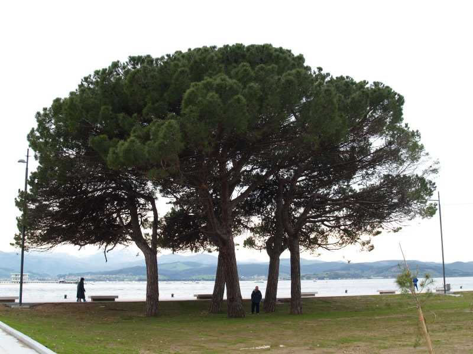

Encuentro en SantoñaCarlos Pertiñez comprobando que son cinco pinos y no seis, como creíamos (Nota aclaratoria: efectivamente hay cinco pinos, pero pensábamos que eran seis los que en nuestra infancia, nos dieron sombra y que, por consiguiente, habían talado uno. Posteriormente y vía e-mail, Carlos Bitaube nos confirmó que los pinos eran cinco, a través de una postal que tiene del año en que se inventó la tos.) |
|
 |